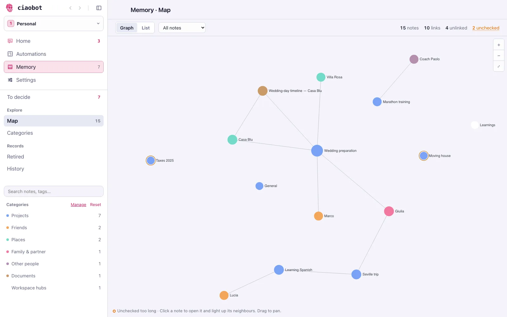
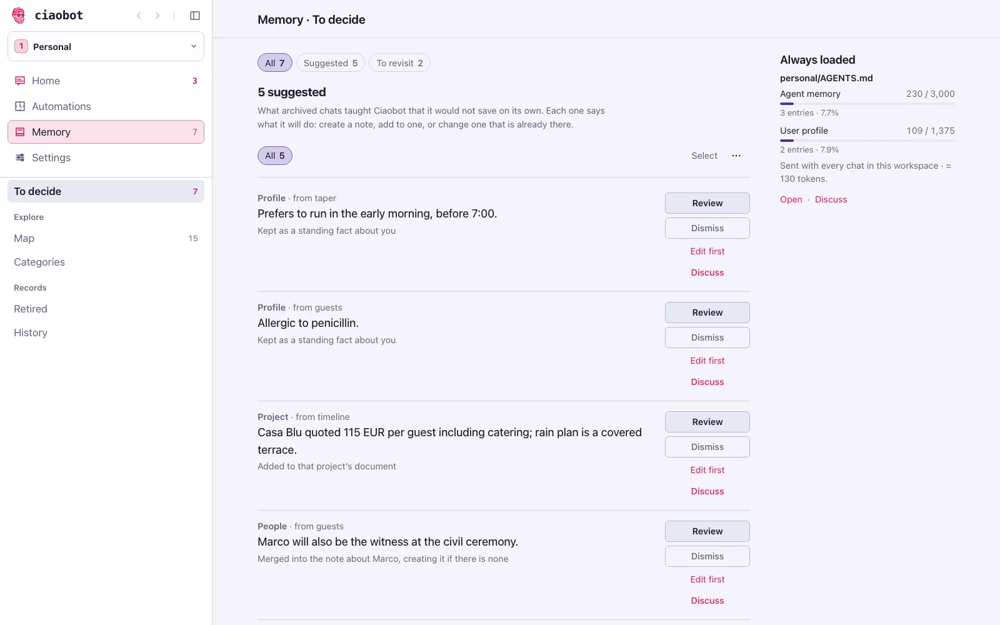

Your second brain
How memory works
No magic and no hidden database. Ciaobot's memory is a folder of text notes plus a few simple rules about when to write and when to look.
The short version
1. What it always knows
Every workspace has a short core memory with two parts: about you (where you live, how you like answers) and agent memory (rules and facts that matter in every chat). It's small on purpose, about a page, and it lives in a plain file called AGENTS.md in your workspace folder.
On top of that, each message carries a small, invisible header: the workspace, the project, the project's description and today's date. If you mention someone or something Ciaobot has a note about, it adds a pointer to that note too, so the assistant knows where to look.
That's all that's loaded automatically. Everything else is looked up only when it's needed, which keeps chats fast and focused.
2. How it finds things again
Everything else lives in your notes folder: one note per project, per person, per place, plus a learnings list. When a question needs background ("which venues are we still considering?"), the assistant searches that folder, reads the matching snippets.
It's a plain full-text search on your own computer, and it only looks in the current workspace, so work notes never show up in a personal chat.

3. What happens when you archive a chat
Ciaobot doesn't take notes while you talk. When you archive a chat (with Session insights on), it saves the conversation and starts a memory pass in the background. Home shows a memory insights row while it runs.
-
Save the conversation
A readable copy of the chat is saved in your folder, so nothing is lost even if nothing is filed.
-
Open the memory pass if you like
The pass is a chat of its own, in a Memory project the sidebar doesn't list, running on the model you chose in Settings → Providers. You can open it from Home, read what it did, and answer it or steer it like any other chat.
-
File what's sure, queue what isn't
It reads the conversation next to what Ciaobot already knows. It updates the notes a person or project already has, folds decisions into the project note, and creates a note only for something genuinely new. Facts it is confident about are written straight away, including into core memory. Anything unsure waits in To decide as a suggestion with a tag, and a one-line note on whether the nightly run can settle it or only you can.
What it leaves out: anything from an automated run (that wasn't you), a pattern it has seen in fewer than three chats (counted quietly, not saved as a fact), the fact that a task was finished (the task already records it), and instructions hidden inside a chat (the conversation is evidence, never a command). What stays is the kind of thing a good assistant would write down: "prefers morning meetings", "venue shortlist: Villa Rosa and Casa Blu", "Marco is the best man".
Where each fact goes
| Kind of fact | Where it's filed | Example |
|---|---|---|
| About you, true everywhere | Core memory, about you | "Lives in Milan, vegetarian" |
| A rule for every chat | Core memory, agent memory | "Keep answers short; use tables for plans" |
| About one project | That project's note | "Wedding budget capped at €22k" |
| About a person | A note for that person | "Marco: best man, allergic to nuts" |
| A lesson for next time | The learnings list | "The school's calendar only accepts a work email" |
| Anything uncertain | Your suggestions queue | "Allergic to penicillin?" |
Categories: what's worth keeping, and how
Every note in your memory folder has a category. The list of categories is what tells Ciaobot what deserves its own note, where that note goes, and how long its facts can be trusted. Without it, everything would land in one pile.
Each category carries four things:
- When to use it: a one-line rule. Project is "something with an outcome and a finish line: status, decisions, next steps". Person is "a human you know or work with: updates, roles, relationships".
- Where it lives: the folder new notes of that kind are filed in, so people go under
People/and projects underProjects/. - How fresh it must stay: a note about a project is flagged for re-checking sooner (30 days) than one about a person (90 days).
- Whether it's a record of a thing or a document about it: people, projects, places, ideas and resources are things Ciaobot keeps a record of; a journal is a document.
Ciaobot ships with a stock set: person, project, place, idea, resource, journal, and a catch-all note for anything that fits nowhere else. That catch-all is used before a new category is invented, which keeps the list from sprawling. A log is not its own category; it files as a journal.
Make it yours
Open Memory → Categories in the app to add, edit or turn off a category. It is stored in one editable file, entity-types.yaml, in your memory folder. Add a category (say client or recipe) with its own description and folder, change how quickly a kind of note goes stale, or turn a stock one off. Your edits are merged over the stock list, so you only write what you change. A sharper description gives a sharper filing decision: it's the same instruction the assistant reads when it decides what to save and where. A change shapes how future notes are filed; no empty folder is created.
See what it remembered. Decide what stays.
With Session insights enabled, archived chats can file confident facts automatically; uncertain ones wait as proposals. Turn Session insights off to stop the memory pass for newly archived chats. Not every remembered fact requires approval, and not every historical change has an Undo button.
Suggestions wait for you
Each suggestion names its destination. To decide previews the change where it can be determined before writing; model-decided merges are labelled as such. Large-file previews can omit changes beyond the displayed window. Edit the wording, accept or dismiss it, or use talk about it to discuss it with the assistant.
When you accept or dismiss, the decision screen asks why — a quick chip or a few words, always optional, and you can continue without one. Accepting opens the card that confirms the change; dismissing opens a confirmation naming the suggestion. History shows your reason beside the decision, and the same goes for decisions on tasks.

Review history and undo supported changes
History records memory decisions and shows before/after details for writes with receipts. Undo is available where a reversible receipt exists; older records and some batch entries are view-only. A memory or profile change that Workspace care applied itself under Memory handover reads Filed by Workspace care (or Dismissed by Workspace care), and an accepted one can be undone from the row.
Retire notes without losing them
Old or unused notes are flagged for your decision, not automatically deleted. Review the evidence, keep a note, or move it to the retired list. Retired notes remain restorable until you explicitly choose permanent deletion; there is no timed purge.
Tell it directly
/remember saves a fact as a suggestion; asking in plain words ("remember that…") lets the assistant write it straight away.
The nightly tidy-up
Once a night, per workspace, a routine called Workspace care works through the queue and the notes:
- Files the suggestions tagged project, people and learnings, and decides the review ones. A judgement call comes back to you as a yes/no question.
- For every memory and profile suggestion it records a guess (would you accept or dismiss it?) and leaves the suggestion for you. The guess is never a decision.
- Leaves alone anything marked decide: you, and escalates what it cannot settle.
- Tidies core memory only when a part reaches about 85% of its limit: it merges duplicates, drops expired facts and moves project-only facts into their project. Every line it removes is copied first to
Memory-Consolidations.md, the undo log. - Re-checks notes, and single facts inside them, that have gone too long without a check, and flags the rest.
Memory handover
Settings → choose a workspace → Overview → Memory handover is the one switch that lets it do more for memory and profile, per workspace: Off (guess only), Dismiss, or Dismiss and accept, which lets queued text reach core memory, up to five changes per run, each with Undo in History. The settings card shows how often its guesses matched yours first. It cannot act on installs without a trusted service definition, and says so.
What it never does:
- add a new fact to core memory (unless you chose Dismiss and accept);
- delete or retire a note: old or unused notes are only flagged, and you decide;
- edit a skill or your workspace guide;
- touch another workspace;
- drop an important fact just to save space.
The weekly pass
About once a week the same run also does the slower work. It is review-only where it matters:
- Goes through the notes the vault flags as candidates to retire or merge (unchecked too long, unlinked, possible duplicates) and reports them. It never retires or deletes one.
- Tidies the workspace: rebuilds the search index and fixes dead links and wrong note types.
- Reviews the body of your workspace guide and files suggestions. It never edits the guide itself.
- Reads your recent decisions and updates
Memory-Review-Rules.mdandTask-Rules.mdwhen there are at least five new ones. A rule that would change a verdict is asked as a yes/no first.
Projects you've finished
A completed project leaves the sidebar, but its notes stay searchable, so "what did we decide about the movers last year?" still works.
Back it up
Your memory lives in one folder, so a private copy somewhere else protects it if the computer is lost. Ciaobot turns that folder into a Git repository, which gives it a full history of every change. If the folder is already inside a Git repository, Ciaobot uses that one instead (what that means). Once the repository is connected to a private GitHub repository, Ciaobot pushes to it automatically, with nothing for you to run.
Settings → General → Memory backup shows where things stand. Back up now runs a copy on demand.
If it isn't connected yet
Choose Set up in Ciaobot and Ciaobot walks you through it in a chat, or choose Copy setup prompt and paste it into any agent (Claude Code, Codex, opencode, and so on). The agent creates the private repository, connects the folder to it and checks that the first backup worked. You never need to know Git commands.
It's just text files
Everything above is ordinary Markdown in the folder you picked during setup:
personal/
AGENTS.md core memory (about you + agent memory)
memory-vault/
projects/active/… one folder per project
projects/completed/… finished projects
People/ one note per person
Workspace/Learnings.md lessons learned
Workspace/Memory-Proposals.md your suggestions queue
Workspace/Memory-Consolidations.md undo log for tidied core memory
Workspace/Memory-Review-Rules.md what you keep and drop (editable)
Workspace/Task-Rules.md how you like tasks done (editable)
Logs/Chats/ a readable copy of every archived chatYou can open and edit it in Obsidian or any text editor, back it up like any folder, and keep using it with other AI tools, even without Ciaobot.